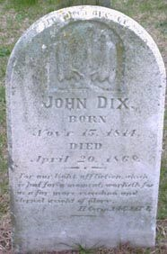

John Dix
1814–1868
Life Events
Born: November 15, 1814 — Virginia
Died: April 20, 1868 — Deal Island, Somerset County, Maryland
Family
Spouse:
Military Service
No military service information has been added.
Biography
John Dix was born on November 15, 1814, in Virginia, according to his cemetery memorial information.
He married Margaret Daniel on June 3, 1834, in Somerset County, Maryland. Margaret was a daughter of Travers Daniel, whose 1858 will identifies her among his children.
John died on April 20, 1868, at the age of 53. He was buried at Saint Johns Cemetery on Deal Island in Somerset County, Maryland, where his gravestone survives.
Photos
No additional photographs have been added.
Grave & Burial

Saint Johns Cemetery, Deal Island, Somerset County, Maryland
Sources
No sources have been added yet.